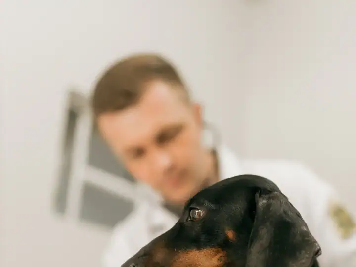

01
Consultas
Avaliação clínica completa do seu cão ou gato, com orientação clara para o tutor.
AgendarClínica veterinária no Centro de Itapecerica da Serra
Consultas, vacinas, cirurgias e exames com atendimento atencioso e preço justo, no centro de Itapecerica. Nota 4,6 com 281 avaliações no Google.
Cães e gatos
Escolha o serviço e fale direto com a Animal Care. A mensagem já vai pronta no WhatsApp, é só dizer o nome e a espécie do pet.
Na Animal Care o pet é atendido com calma e carinho, e o tutor sai sabendo exatamente o que foi feito. Tem tutor que leva o pet desde a inauguração.
Atendimento com calma, explicação clara e acompanhamento depois da consulta.
Conte o nome, a espécie e o que o pet está apresentando. A equipe marca o melhor horário.
O veterinário examina, explica o que encontrou e indica o tratamento ou os exames.
Você sai com as orientações por escrito e pode tirar dúvidas pelo WhatsApp depois.
Segunda a sexta: 09h–18h · Sábado: 09h–14h
Avaliações reais de tutores publicadas no Google Maps.
“Hoje luna foi tirar os pontos com Dra Helen. Tudo bem graças a Deus. Liberada para pular! Trabalho maravilhoso desta veterinária. Nota mil.”
“Quero agradecer por todos os procedimentos feitos até hoje em meus pets. Desde as vacinas, cirurgias e cuidados especiais.”
“Levo meu menino desde quando abriu, e quando passou com a Dra. Helen foi amor a primeira vista, ele é doidinho por ela.”
“A Dr. Sempre atenciosa e tratamento excepcional, caso esteja cheio a recepção sempre avisa, lugar limpo e preço justo.”
“Gosto muito do atendimento e a dedicação da dra.com os animaizinhos sinto que ela gosta muito do que faz .”
Não achou sua dúvida? Pergunte direto para a equipe no WhatsApp.
A Animal Care fica na Av. Eduardo Roberto Daher, 493, Centro, em Itapecerica da Serra (SP), CEP 06850-040. Pelo botão "Traçar rota" nesta página você abre o caminho direto no Google Maps.
A Animal Care atende segunda a sexta, das 09h às 18h; sábado, das 09h às 14h. Aos domingos fica fechada. O agendamento é feito pelo WhatsApp.
É só chamar no WhatsApp (11) 4321-6919 pelo botão "Agendar consulta". Chame no WhatsApp, diga o nome, a espécie e o que o pet está apresentando. A equipe marca o melhor horário.
Consultas, Vacinas, Cirurgias e castração, Exames, Filhotes e atendimento para gatos. O tratamento indicado é definido pelo médico-veterinário na consulta.
A V8 ou V10 e a antirrábica são as principais, com reforço anual. O veterinário monta o calendário conforme a idade e a rotina do pet.
Depende da espécie, do porte e da saúde do animal. A idade ideal é indicada pelo veterinário na consulta.
O ideal é nas primeiras semanas em casa, para avaliar a saúde, vermifugar e começar as vacinas.
Agende a consulta na Animal Care em poucos minutos pelo WhatsApp.